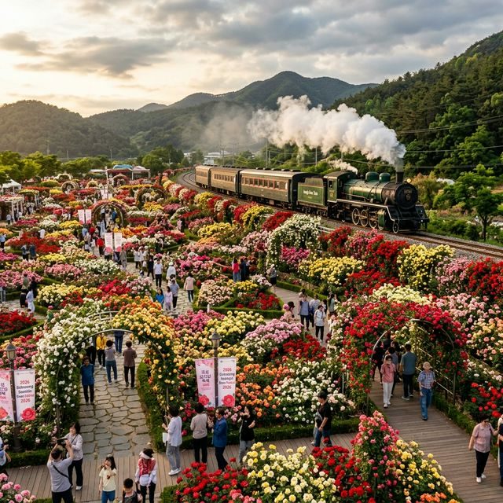
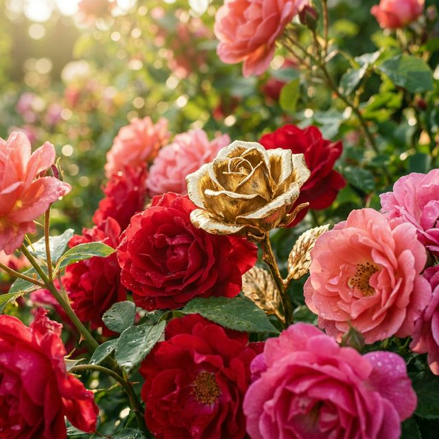
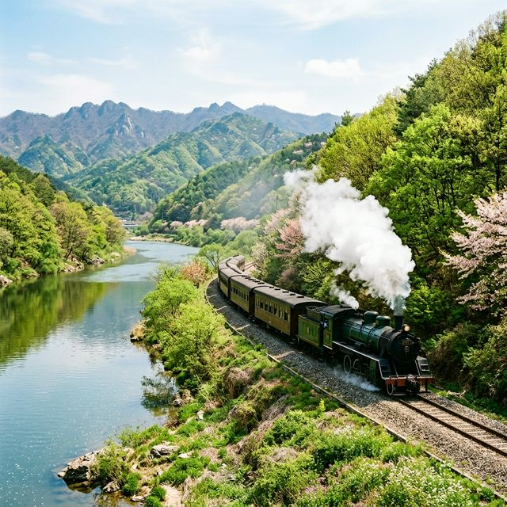

올해 곡성 세계장미축제는 예년보다 더욱 풍성한 볼거리와 확대된 공간으로 기획되었습니다. 축제의 공식 기간은 2026년 5월 22일(금)부터 5월 31일(일)까지 총
10일간 진행됩니다. 작년까지는 특정 구역에 집중되었던 행사가 올해는 곡성 섬진강 기차마을 전역으로 확장되어 관람객들이 더욱 여유롭게 장미를 만끽할 수 있게
되었습니다.
기상청의 2026년 봄 기상 전망에 따르면, 5월 하순의 기온은 평년보다 약간 높을 것으로 예상되어 장미의 개화 속도가 매우 빠를 것으로 보입니다. 축제 첫날부터 만개한 장미의 장관을 볼 수 있을
가능성이 높으니, 이왕이면 축제 초반에 방문하시는 것을 추천드립니다.
| 축제 명칭 | 제16회 곡성 세계장미축제 |
|---|---|
| 주제 | 열여섯, 장미 사춘기: 설렘·성장·변화 |
| 기간 | 2026. 05. 22 ~ 05. 31 (10일간) |
| 장소 | 곡성 섬진강 기차마을 일원 |
축제명에서 알 수 있듯 올해의 컨셉은 '사춘기'입니다. 이는 단순히 꽃이 피는 과정을 넘어, 곡성 장미가 가진 역동성과 감성을 젊은 감각으로 재해석하겠다는 의지가 담겨
있죠. 기차마을 내부의 장미공원뿐만 아니라, 외곽의 소나무 숲길과 섬진강변 산책로까지 장미 장식이 이어지며 관람객의 발길이 닿는 모든 곳을 포토존으로 만들었습니다.
특히 사춘기라는 테마에 맞춰 레트로한 느낌의 기차 테마와 현대적인 조명 아트가 결합된 야간 개장은 이번 축제의 하이라이트가 될 전망입니다.
낮에는 화려한 장미 본연의 색감을 즐기고, 밤에는 조명에 반사되어 몽환적인 분위기를 자아내는 야경을 꼭 놓치지 마세요.

곡성 섬진강 기차마을 장미 전경 / AI 제작 이미지
축제의 열기를 더해줄 '행운의 황금장미를 찾아라' 이벤트는 올해 규모가 더욱 커졌습니다. 수만 송이의 장미 덤불 사이에 숨겨진 힌트를 찾아 미션을 해결하면 순금으로 제작된
황금장미를 증정하는 이 프로그램은 남녀노소 누구에게나 최고의 인기 콘텐츠입니다. 참여 인원이 한정되어 있으니 현장에 도착하자마자 현장 접수처에서 예약 여부를 확인하는 것이 상책입니다.
또한, 로맨틱 로즈 프로포즈 존에서는 연인들을 위한 특별한 이벤트가 진행됩니다. 사전에 신청한 사연을 바탕으로 장미 숲속에서 단 하나뿐인 고백의 순간을 만들어주는데,
2026년에는 VR(가상현실) 기술을 접목하여 과거와 현재의 추억을 연결해주는 감동적인 연출이 더해진다고 합니다.
음악이 빠진 축제는 상상할 수 없죠. 이번 260423 축제 기간 동안 기차마을 곳곳에서는 전국에서 모인 젊은 뮤지션들의 '버스킹 챌린지'가 이어집니다. 장미 사춘기라는
테마에 어울리는 싱그러운 선율들이 축제장 전체에 울려 퍼질 예정입니다. 특히 주말 저녁에는 국내 정상급 아티스트들이 참여하는 대규모 콘서트도 기획되어 있어 뜨거운 열기를 더할 예정입니다.
축제의 시작을 알리는 개막 퍼레이드는 고전적인 클래식 카와 화려하게 장식된 꽃마차가 어우러져 장관을 이룹니다. 기차마을 입구에서부터 장미공원 광장까지 이어지는 퍼레이드
행렬은 마치 유럽의 성대한 축제장에 온 듯한 이국적인 정취를 선물할 것입니다.

수만 송이 장미 속 숨겨진 황금장미 / AI 제작 이미지
곡성 세계장미축제의 입장료는 작년과 동일한 수준으로 유지되지만, 곡성군 지역상품권 지급 제도를 통해 실제 체감 비용은 훨씬 경제적입니다. 성인 기준 입장료 5,000원을
결제하면 그중 2,000원을 지역에서 사용 가능한 상품권으로 돌려받을 수 있습니다. 이 상품권은 축제장 내 먹거리 구매나 곡성 시내 전통시장에서 자유롭게 현금처럼 사용 가능합니다.
만 65세 이상 어르신, 국가유공자, 장애인 등은 증빙 서류 지참 시 무료 입장이 가능하며, 곡성 군민 또한 주소지 확인을 통해 무료로 관람하실 수 있습니다. 온라인 예매
시 대기 시간을 대폭 줄일 수 있는 '패스트 트랙' 기능을 활용해 보시기 바랍니다.
축제 기간 중 주말은 매우 혼잡할 것으로 예상됩니다. 곡성역에서 기차마을까지는 도보로 약 10분 거리이므로, 가급적 KTX나 무궁화호를 이용한 기차 여행을 권장합니다.
용산역에서 곡성역까지 KTX로 약 2시간 10분이면 도착할 수 있어 당일치기 여행지로도 제격입니다.
자차 이용 시에는 제1주차장부터 제3주차장까지 운영되는데, 오전 10시 이전에 도착하지 못한다면 이미 만차일 확률이 높습니다. 이럴 때는 곡성군에서 운영하는 임시 주차장과 무료
셔틀버스를 이용하는 것이 훨씬 현명합니다. 주차 안내 요원의 지시에 따르지 않고 갓길 주차를 할 경우 불법 주정차 단속의 대상이 될 수 있으니 주의가 필요합니다.
무작정 걷다 보면 장미의 홍수 속에서 길을 잃기 쉽습니다. 전문가가 추천하는 코스는 다음과 같습니다. 먼저 섬진강 증기기관차를 예약하여 구 곡성역의 정취를 느끼며
섬진강변을 한 바퀴 돌아보세요. 이후 장미공원으로 돌아와 1,004종의 장미가 식재된 '메인 로즈 가든'을 관람한 뒤, 출구 쪽에 위치한 소나무 숲에서 피크닉을 즐기는
코스가 가장 완벽합니다.
특히 소나무 숲길 아래 벤치는 장미 향이 은은하게 퍼지면서도 뜨거운 햇볕을 피할 수 있는 최고의 명당입니다. 돗자리를 미리 준비해 간다면 5월의 여유를 부리기에 더할 나위
없을 것입니다.

섬진강을 달리는 향수의 증기기관차 / AI 제작 이미지
곡성에 왔다면 참게수제비와 은어회를 빼놓을 수 없습니다. 섬진강의 깨끗한 물에서 자란 참게를 듬뿍 넣어 끓여낸 수제비는 그 국물 맛이 깊고
구수하여 보양식으로도 손색이 없습니다. 축제장 주변의 식당들도 훌륭하지만, 조금 더 깊은 손맛을 원하신다면 곡성 전통시장 내부의 노포들을 찾아가 보시는 것을 추천합니다.
또한 장미 축제 한정 메뉴로 출시되는 장미 에이드와 장미 아이스크림은 비주얼만큼이나 향긋한 풍미를 자랑합니다. 축제장을 돌아다니느라 갈증이
날 때쯤 이 분홍빛 음료 한 잔이면 사춘기 소녀처럼 가슴 설레는 기분을 만끽하실 수 있을 것입니다.
5월의 햇살은 생각보다 강렬합니다. 자외선 차단제와 양산(또는 챙이 넓은 모자)은 필수입니다. 기차마을 내부가 꽤 넓으므로 발이 편한
운동화를 착용하시는 것을 강력히 권장합니다. 구두를 신고 넓은 정원을 돌기에는 상당한 무리가 따를 수 있습니다.
반려동물과 함께 방문을 계획하신다면 반드시 목줄 착용 및 배변 봉투 지참 규칙을 준수해 주세요. 또한, 드론 촬영은 축제장의 안전과 관람객의 사생활 보호를 위해 엄격히
제한될 수 있으니 사전에 운영 본부의 허가를 받아야 합니다.